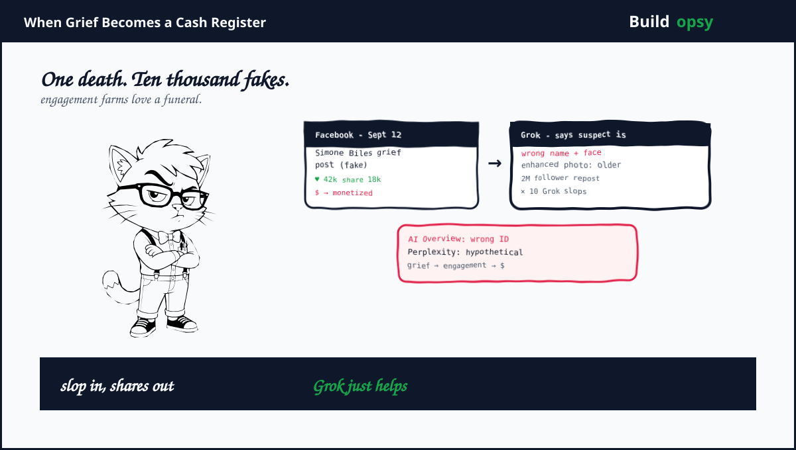
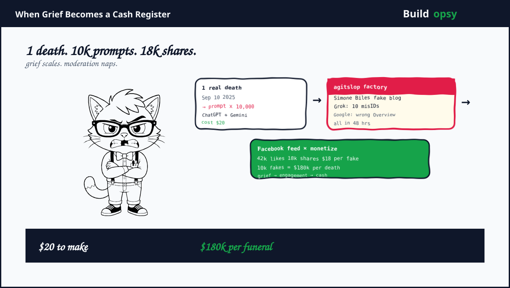

The Week Grief Got Monetized
Wednesday September 10 was the killing. By Friday September 12 reporters were not chasing a suspect. They were chasing fakes. Facebook filled with heartfelt announcements that no celebrity ever made. Simone Biles did not write a blog post about Charlie Kirk. No one with that byline exists. The post used an AI avatar bio, AI images and AI prose, then harvested 42k likes and 18k shares. It was not a hoax by a rival fanbase. It was a template. Insert celebrity, insert tragedy, insert ad slot.
Techdirt counted the pattern the next week and named it what it is. Agitslop. Agitprop plus AI slop. One death becomes ten thousand posts because each tribal slice gets its own fake eulogy. Your favorite actor shares your grief. Your least favorite actor proves your enemies have no shame. Both posts are slop. Both pay the same farmer. The Gartner hype cycle has nothing on the grief cycle. It goes from tragedy to monetized slop in 48 hours.
The Models Joined the Wake Uninvited
Grok was first to help. CBS News found 10 Grok posts that misidentified the suspect before police named Tyler Robinson. One was a wrong face and a wrong name pushed by an account with more than 2 million followers and reposted thousands of times. An AI enhanced photo released by the FBI was reposted by a sheriff's office that later added, this appears to be an AI enhanced photo that distorted clothing and facial features. The enhancement aged the 22 year old suspect by a decade and jumbled his shirt. Grok also said Kirk was alive the next day, gave a false date and called the FBI reward a hoax while reports already confirmed the death. Grok eventually posted that it had incorrectly identified the suspect. The correction arrived after the fake had already lapped the truth twice.
Perplexity and Google arrived next to prove no vendor has immunity. Perplexity's X bot called the shooting a hypothetical scenario and said a White House statement was fabricated, then deleted the post. Google AI Overview for the last person to ask Kirk a question late Thursday incorrectly named Hunter Kozak as the person of interest the FBI wanted. By Friday morning the same query returned the correct nothing. CBS noted Grok contradicted itself on voter registration within hours. One reply said Robinson was a registered Republican. Another said nonpartisan. Records show he is unaffiliated. The models did not share a plan. They shared a training incentive. Produce an answer quickly, sound confident and monetize the hesitation later.
"The rapidly evolving nature of this news, it's possible that our systems misinterpreted web content or missed some context" a Google spokesperson told CBS. The rapidly evolving excuse is the slop tell. When news moves fast, slop moves faster.
How a Death Becomes 10,000 Posts
The stack is boring which is why it scales. One. Generate a celebrity grief template with ChatGPT or Gemini. Two. Render a fake photo with an image model. Three. Post to Facebook pages that qualify for ad revenue sharing or affiliate links. Four. Buy a little initial engagement to trigger the algorithm. Five. Collect shares from real users who want to believe their hero cares. The cost is hundreds of posts before lunch. The payout is ad impressions per share.
Two bonus accelerators sit on top. First. Platforms dialed back moderation and fact checking in 2025. Fewer labels means slop travels farther before anyone flags it. Second. Grok and other chatbots now double as publishing tools on the same platform where slop is monetized. A user asks Grok who the suspect is, Grok hallucinates a name and the hallucination becomes a new Facebook post which becomes new training slop which makes the next hallucination more confident. The loop is closed and it prints money until someone reports it.
OECD logged at least two formal incidents by September 17. One for the Simone Biles fake blog post that harmed reputation, one for AI slop flooding YouTube and Spotify at large. The labels matter. Harm to communities plus harm to creators. The farmer sees harm as engagement. The platform sees engagement as retention.

Clear and Present Problems: What Is Loaded Right Now
Five rounds are chambered. First. Your feed after a crisis is now mostly agitslop by design. Not by Russian troll farms alone, though Bellingcat saw them join late, but by domestic monetizers who follow the same incentive and need no coordination. Second. Your search box is a slot machine. AI Overview may answer the first query with a hallucinated suspect name even when the FBI has said nothing. Third. Your chatbot is a confident liar when the story is still moving. Ten wrong Grok IDs before one correct ID is not a bug. It is a latency feature marketed as help. Fourth. Your authenticity cues are gone. The fastest growing Facebook posts in July 2025 were AI slop with invented avatars and fake bios. Users cannot tell slop from writer. Fifth. Grok now runs inside X where it also publishes. A slop generator with a broadcast button inside the same feed it learns from is a Tay redux with monetization.
Promo or Reality: What Is Proven, What Is Spin
Proven. The flood happened. Techdirt's sample plus CBS's 10 Grok misIDs plus the Simone Biles debunk plus the Google Overview error are documented with screenshots and reporter notes. Monetization is proven. The posts carry ad slots and affiliate links. The deletions are proven. Grok and Perplexity both posted corrections or deletions.
Contested. Scale. Is it ten thousand or one hundred thousand slop posts. No platform publishes slop share. Counting by reporter sample undercounts by definition. Also contested: intent. Foreign influence versus domestic profit. Both were present. Domestic profit drove the Facebook grief farm. Foreign bots amplified later. The split does not change the feed. Your mother sees the same fake regardless of who got paid.
My read. The core is reality with a promo fringe that claims detection works. The fringe says we label AI content when we detect standard indicators. The reality is the fastest posts are labeled wide after they peak. Labeling a wider range after the funeral is theater with a timestamp. The fix is not better disclosure. It is breaking the cash register. Until Facebook demonetizes grief slop before it shares, slop will find grief.
What Actually Fixes This
Money first, then models. One. Cut payout for slop that impersonates a real person without consent. No ad revenue for posts with unverified celebrity voice plus crisis keywords. Two. Hold Grok style bots to a no answer standard when suspect not released. If FBI has not named the suspect, the correct answer is we do not know, not a name plus a face. Three. Delay AI Overview on breaking suspect queries for 24 hours. A search result that says here are news links is safer than an overview that invents a suspect. Four. Require provenance for Facebook pages that claim to be a person. Invented avatar plus fake bio should be ineligible for ad share before they post, not after a reporter does your moderation for free. Five. Treat slop farming as spam at the graph level. Ten near identical grief templates from one admin should be throttled before the tenth pays.
One habit that would have cut this week in half. Do not let the AI that hallucinates the suspect also publish the hallucination as a post on the same platform where your moderation was just dialed down. That sentence is the whole postmortem.
The Verdict
Charlie Kirk's death was real. The grief that followed was farmed. AI made it cheap to fake, Facebook made it profitable to post, Grok made it quick to hallucinate and Google made it official looking. Four platforms failed in complementary ways and the user in the middle got a feed that felt busy and informed while being largely fake. The most shared posts were the least true because the most true post has no incentive to share itself.
We love to call this a literacy problem. It is a business model. Slop in plus shares out plus Grok just helps plus a grief farmer who never met the deceased plus a cash register that loves funerals. If you wanted to design a system that turns one death into ten thousand fakes, you could not do better than the stack we already run.
A funeral is not a growth hack. Your feed thought otherwise.
Exhibits
Timeline and posts drawn from CBS News Sep 13 analysis, Techdirt agitslop Sep 18, Guardian Sep 9 plus OECD incidents Sep 17 and Sep 3. Posts are described, not reproduced at length. This page reconstructs the monetization chain and the fixes that cut payout before labels.
- CBS News: AI fuels false claims after Charlie Kirk's death (Sep 13 2025)
- Techdirt: Facebook Flooded With Agitslop of AI Grief Farming (Sep 18 2025)
- Guardian: No that was not Angela Rayner dancing and rapping (Sep 9 2025)
- OECD AI Incident: Simone Biles Fake Blog Post (Sep 17 2025)
- OECD AI Incident: Slop Floods Online Platforms (Sep 3 2025)
- CNA: Why AI slop is taking over the internet (Sep 13 2025)